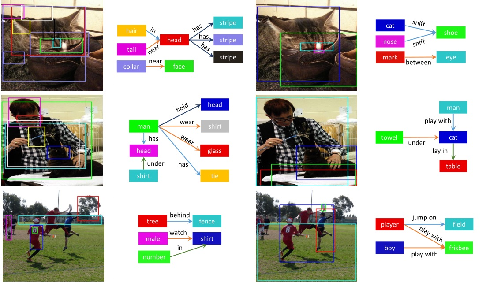

Why we research on visual relationships?
Visual relationships connect isolated instances into the structual graph. It provides a dimension in scene understanding, which is higher than single instance and lower than the holistic scene. The visual relationships act as the bridge of perception and cognition.
What we have done in visual relationships?
From the phrase detection to the scene graph generation, we have the clearer data standard and task for representing relationships.
What next to visual relationships?
After representation of visual relationships, we should use the relationships information and build the bridge from perception to cognition. More than given correct scene graph, the relationships should go further in the semantic and play the actual role in scene understanding.
Why the applications in visual relationships stuck?
Rather than the method side, more problems exist in data side. Before designing methods in how to learn, we should figure out what to learn first.
What should be learned in visual relationships for cognition?
Visually-relevant relationships! The visually-irrelevant relationships like spatial relationships and low diversity relationships degrade the relation problems to detection or deductive reasoning. Those visually-irrelevant relationships pull back the relationships inferring to perceptive side. To take advantage of relationships information for semantic understanding, Only the Visually-relevant relationships should be learned!
Abstract
Relationships encode the interactions among individual instances and play a critical role in deep visual scene understanding. Suffering from the high predictability with non-visual information, relationship models tend to fit the statistical bias rather than 'learning' to infer the relationships from images. To encourage further development in visual relationships, we propose a novel method to mine more valuable relationships by automatically pruning visually-irrelevant relationships. We construct a new scene graph dataset named Visually-Relevant Relationships Dataset (VrR-VG) based on Visual Genome. Compared with existing datasets, the performance gap between learnable and statistical method is more significant in VrR-VG, and frequency-based analysis does not work anymore. Moreover, we propose to learn a relationship-aware representation by jointly considering instances, attributes and relationships. By applying the representation-aware feature learned on VrR-VG, the performances of image captioning and visual question answering are systematically improved, which demonstrates the effectiveness of both our dataset and features embedding schema.
Details
Visual-relevance Relationships dataset (VrR-VG) is a scene graph dataset from Visual Genome. It contains 117 visual-relevant relationships selected by our method.
VrR-VG is constructed from Visual Genome. The VrR-VG has 58983 images and 23375 relation pairs. Excluded positional and statistiaclly biased reltionships, the VrR-VG is more balance and includes more valuable relaiton data.Rather than generating scene graph dataset by relation label frequency, the VrR-VG gathers visual-relevant relationships, like "play with", "lay on", "hang on", etc. The relationships like "on" , "wearing", "has", etc., which can be inferred by positional information or data bias, are excluded in our dataset. The VrR-VG offers a more balanced research material for relationships, and more diverse relation data for semantic tasks.
Distribution comparison of datasets. The images in left column is from VG150, and the images in right is our VrR-VG. VrR-VG is more balance and diverse.
Tag cloud comparison of dataset.
Scene graph generation examples for VrR-VG and previous VG150(splited by label frequency). The images in left column is from VG150, and the images in right is our VrR-VG.
